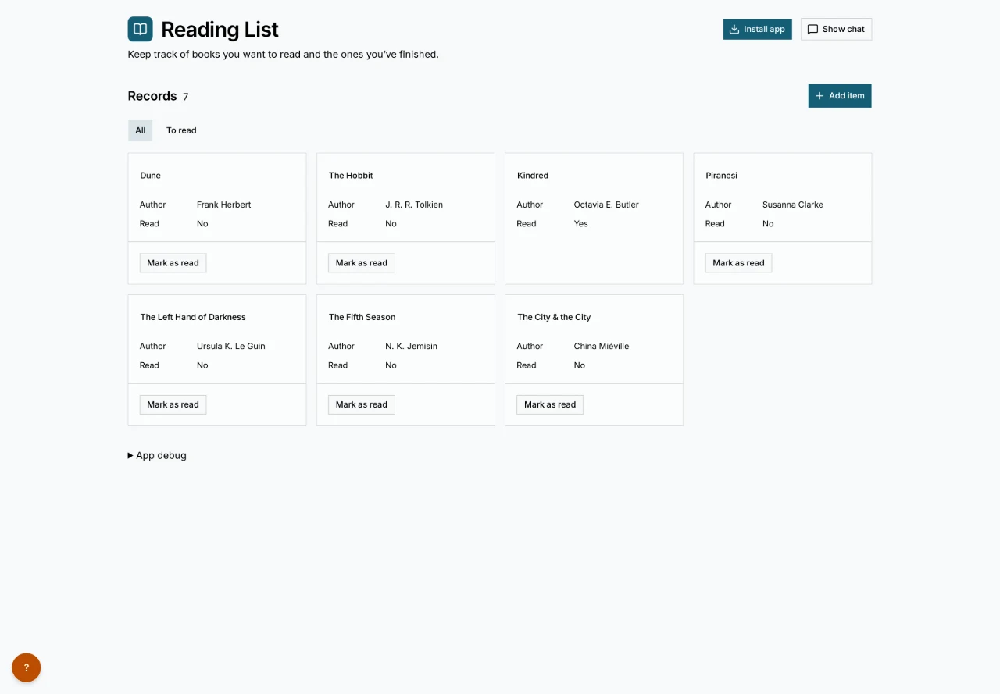
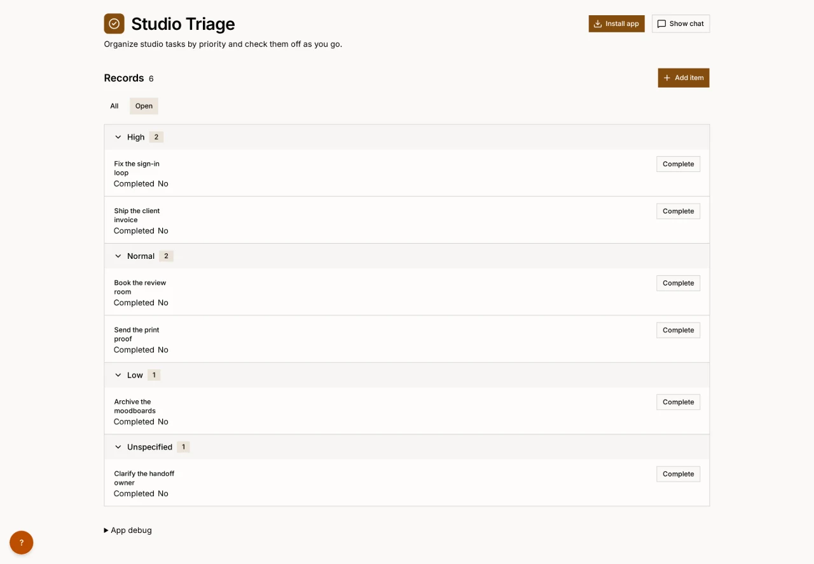
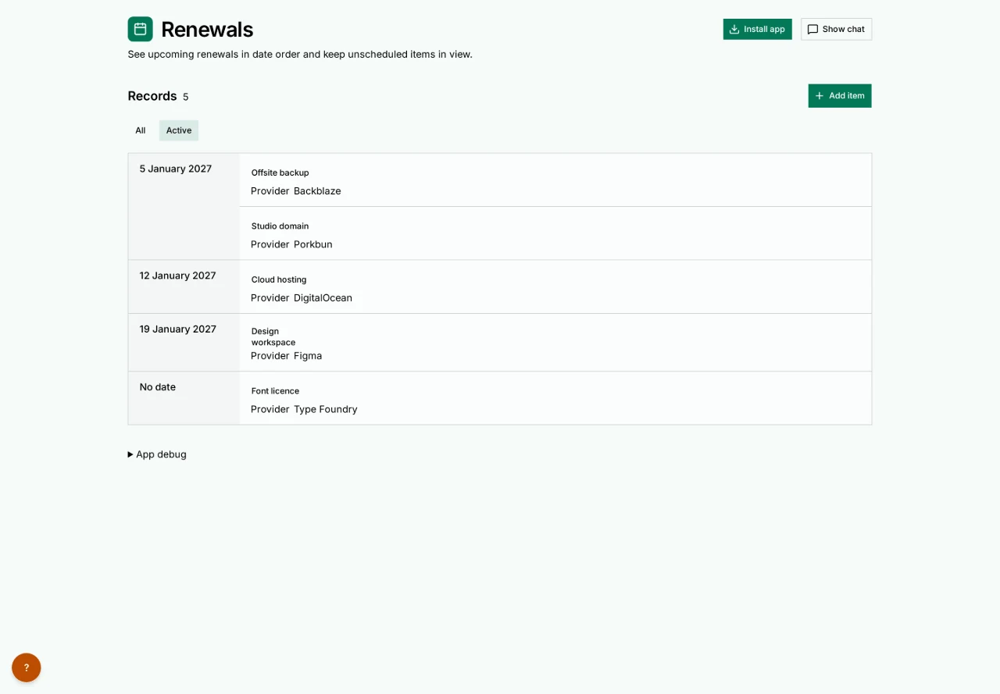
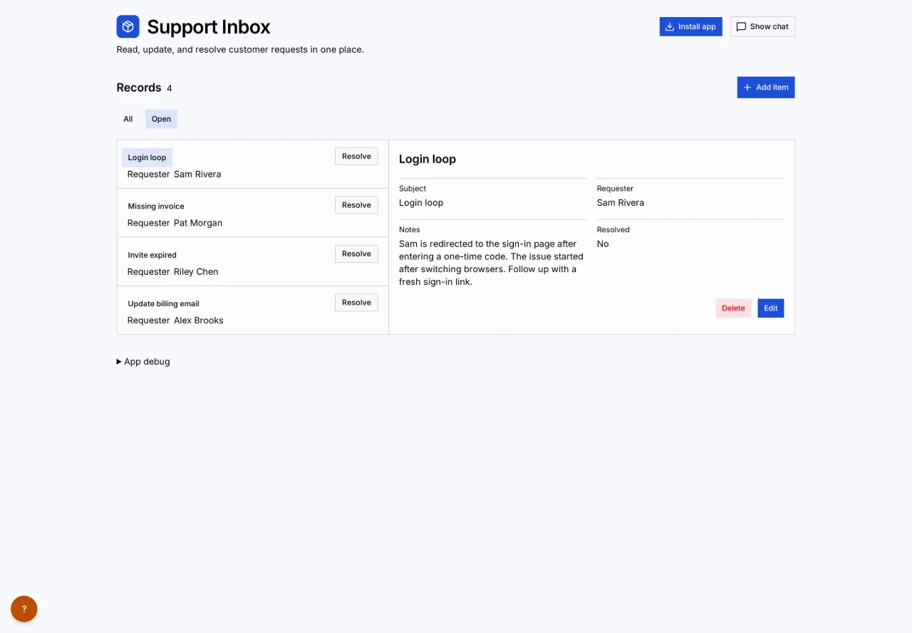
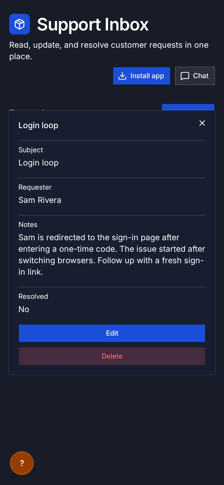
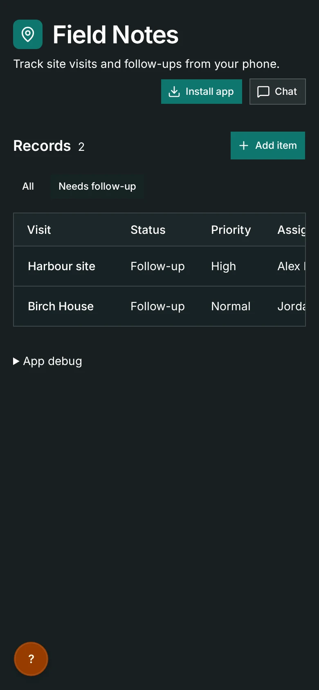

Cards
Reading List
See books and authors at a glance. Mark a book as read and it drops out of your To read view.
Play demoDescribe what you want to track in Builder. Give it a layout that fits, then make it yours with saved views, quick actions, and color.
Explore the demosFrom a reading list to a support inbox, choose a layout that puts the right information in view.

Cards
See books and authors at a glance. Mark a book as read and it drops out of your To read view.
Play demo
Grouped list
Group tasks by priority, collapse sections, and complete work as you go.
Play demo
Agenda
See what’s coming up by date, with items that still need a date at the end.
Play demo
Split view
Read ticket details beside the list and resolve requests as you work through them.
Play demoOpen a support ticket in a focused dialog on your phone, or bring up the assistant in Field Notes when you’re on a site visit.
Watch mobile chat

Give each app its own look and bring the records that need attention to the front.